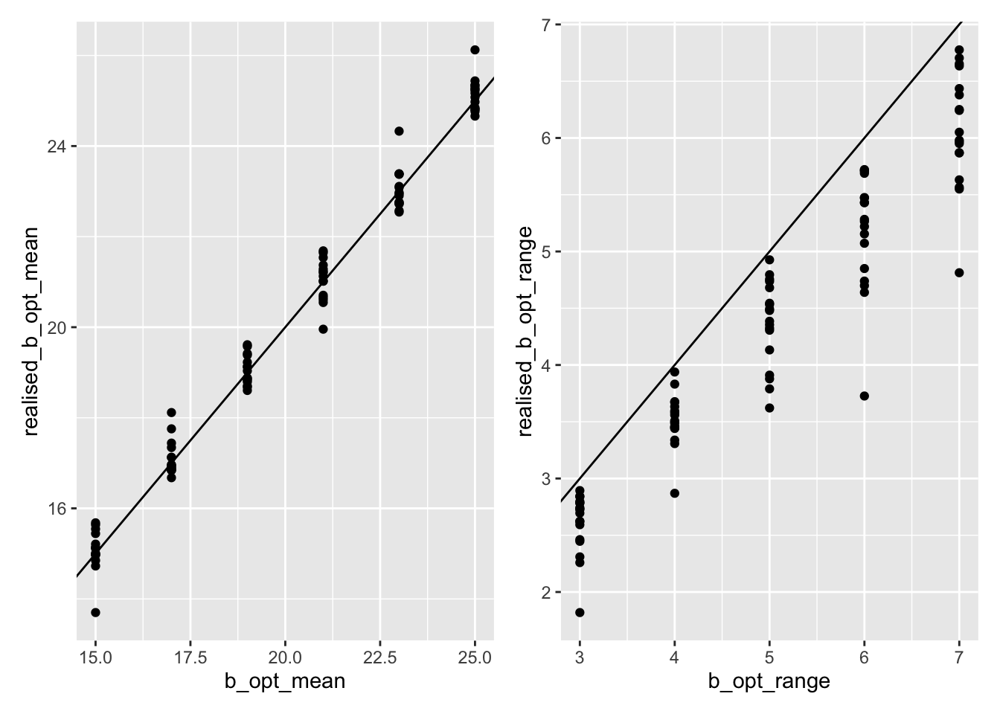
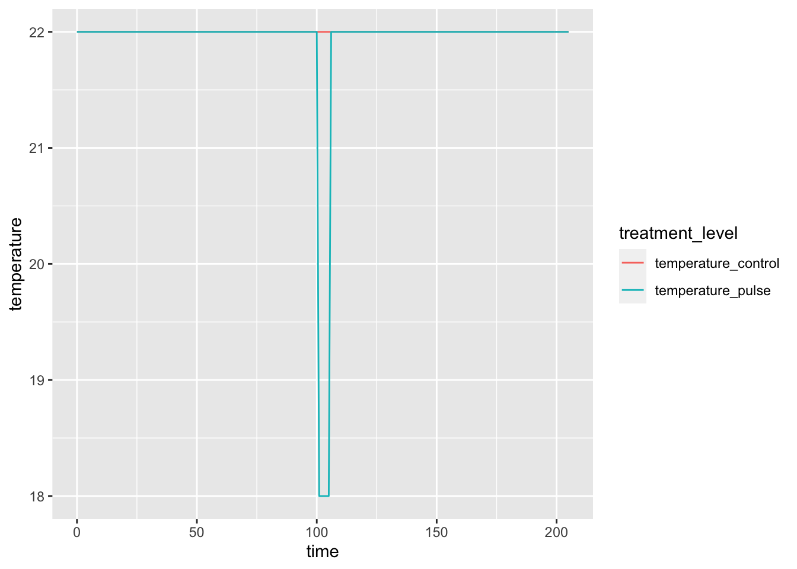

Experimental design and data formats
Introduction
Shyamolina, my idea is that I specify the simulations that you then run, and that you then pass me back the data for those. Hence, this document and the code therein specifies an experimental design, encodes that design in datasets for you to use to run simulations, and specifies the output data format that you should pass the data back to me in.
Experimental design
Creating one community
The following need to be specified for each community (in addition to the number of species):
| Property | Level | Notes |
|---|---|---|
| a_b | Species | Intercept of intrinsic growth rate - temperature function of species i. |
| b_{opt,i} | Species | Temperature at which intrinsic growth rate is highest for species i. |
| s_i | Species | Width of intrinsic growth rate - temperature function of species i. |
| a_d | Species | Intercept of death rate - temperature function of species i. |
| z_i | Species | Slope of death rate - temperature function of species i. |
| alpha_{i,j} | Interaction | Strength of interspecific effect of species j on species i. |
Lets do this for a community:
Set the number of species to ten:
S <- 10Give all species the same \(a_b\):
a_b <- 1
a_b_i <- rep(a_b, S)Draw \(b_{opt, i}\) values from a uniform distribution with mean \(b_{opt,mean}\) and range \(b_{opt,range}\):
b_opt_mean <- 20
b_opt_range <- 5
b_opt_i <- runif(S,
b_opt_mean - b_opt_range/2,
b_opt_mean + b_opt_range/2)Give all species the same \(s_i\):
s <- 1
s_i <- rep(s, S)Give all species the same \(a_{d,i}\):
a_d <- 1
a_d_i <- rep(a_d, S)Give all species the same \(z_i\):
z <- 1
z_i <- rep(z, S)Draw \(alpha_{i,j}\) from a normal distribution with mean \(alpha_{i,j,mean}\) and standard deviation \(alpha_{i,j,sd}\). We draw \(S^2\) values since there are that number of pairwise interactions. At the moment we do not constrain other than making the diagonals (intraspecific terms) a factor \(intrafactor\) greater than the others, so that there is greater chance of coexistence even in the absence of different temperature optima.
alpha_ij_mean <- 0
alpha_ij_sd <- 1
intrafactor <- 2
temp <- rnorm(S*S,
mean = alpha_ij_mean,
sd = alpha_ij_sd)
alpha_ij <- matrix(temp, S, S)
diag(alpha_ij) <- diag(alpha_ij * intrafactor)Then some housekeeping… put all that information into one object:
community_pars_object <- list(S = S,
a_b_i = a_b_i,
b_opt_i = b_opt_i,
s_i = s_i,
a_d_i = a_d_i,
z_i = z_i,
alpha_ij = alpha_ij)Creating multiple communities
It is useful to create a function that makes a community:
source(here("R/make a community.r"))
# make_a_community <- function(S,
# a_b,
# b_opt_mean,
# b_opt_range,
# s,
# a_d,
# z,
# alpha_ij_mean,
# alpha_ij_sd,
# intrafactor)
# {
#
# a_b_i <- rep(a_b, S)
#
# b_opt_i <- runif(S,
# b_opt_mean - b_opt_range/2,
# b_opt_mean + b_opt_range/2)
#
# s_i <- rep(s, S)
#
# a_d_i <- rep(a_d, S)
#
# z_i <- rep(z, S)
#
# temp <- rnorm(S*S,
# mean = alpha_ij_mean,
# sd = alpha_ij_sd)
# alpha_ij <- matrix(temp, S, S)
# diag(alpha_ij) <- diag(alpha_ij * intrafactor)
#
# community_pars_object <- list(S = S,
# a_b_i = a_b_i,
# b_opt_i = b_opt_i,
# s_i = s_i,
# a_d_i = a_d_i,
# z_i = z_i,
# alpha_ij = alpha_ij)
#
# community_pars_object
# }An example of using this function:
set.seed(1)
S <- 16
a_b <- 3
b_opt_mean <- 20
b_opt_range <- 5
s <- 1
a_d <- 0.1
z <- 0.05
alpha_ij_mean <- 0.5
alpha_ij_sd <- 0.1
intrafactor <- 1
community_pars_object <- make_a_community(S = S,
a_b = a_b,
b_opt_mean,
b_opt_range,
s = s,
a_d = a_d,
z = z,
alpha_ij_mean = alpha_ij_mean,
alpha_ij_sd = alpha_ij_sd,
intrafactor = intrafactor)
str(community_pars_object)List of 7
$ S : num 16
$ a_b_i : num [1:16] 3 3 3 3 3 3 3 3 3 3 ...
$ b_opt_i : num [1:16] 18.8 19.4 20.4 22 18.5 ...
$ s_i : num [1:16] 1 1 1 1 1 1 1 1 1 1 ...
$ a_d_i : num [1:16] 0.1 0.1 0.1 0.1 0.1 0.1 0.1 0.1 0.1 0.1 ...
$ z_i : num [1:16] 0.05 0.05 0.05 0.05 0.05 0.05 0.05 0.05 0.05 0.05 ...
$ alpha_ij: num [1:16, 1:16] 1 0.469 0.651 0.539 0.438 ...#length(community_pars_object)Now, to create multiple communities, e.g., that vary in \(b_{opt,mean}\) and \(b_{opt,range}\), we first specify these two treatments, and the number of replicates:
b_opt_mean_treatment <- seq(15, 25, 2)
b_opt_range_treatment <- seq(3, 7, 1)
num_replicates <- 3; rep_names <- paste0("rep-", 1:num_replicates)The we make a dataframe with all combinations (i.e., fully-factorial), and give each community a unique ID:
expt <- expand.grid(b_opt_mean = b_opt_mean_treatment,
b_opt_range = b_opt_range_treatment,
rep_names = rep_names)
expt <- expt %>%
mutate(community_id = paste0("Comm-", 1:nrow(expt)))And then make a community for each row, according to the information in each row:
# expt defaults (i.e. not in treatments)
S <- 16
a_b <- 3
s <- 1
a_d <- 0.01
z <- 0.05
alpha_ij_mean <- 0.5
alpha_ij_sd <- 0.1
intrafactor <- 1
community_object <- expt %>%
rowwise(community_id) %>%
#group_by(b_opt_mean, b_opt_range, rep_names, community_id) %>%
do(community_object = make_a_community(S = S,
a_b = a_b,
b_opt_mean = .$b_opt_mean,
b_opt_range = .$b_opt_range,
s = s,
a_d = a_d,
z = z,
alpha_ij_mean = alpha_ij_mean,
alpha_ij_sd = alpha_ij_sd,
intrafactor = intrafactor))
expt <- cbind(expt, community_object)Here, the final column is a column of lists, with each element being list that is the community object.
And now we check that what we did has in fact worked, by calculating the realised community properties and plotting them against the specified community property. We see that it has all worked :) (We expect the realised range to be smaller than the specified range.)

This experimental design for the communities can be saved to file to then be used in the code for running an experiment:
##saveRDS(expt, here("experiments/1-design/expt_communities.RDS"))Creating the perturbation treatment
Here we specify the various parameters of the control and perturbation treatment temperature time series. First specify the control temperature:
temperature_control <- 22and the temperature of the pulse perturbation:
temperature_pulse <- 18And the duration of the pulse:
duration_pulse <- 5We also give the amount of time to run the model before the pulse, and the amount of time to run it after the pulse:
before_pulse <- 100
after_pulse <- 100From those, we can construct the temperature time series:
temperature_treatments <- tibble(
time = seq(0, before_pulse + duration_pulse + after_pulse, 1),
temperature_control1 = rep(temperature_control, (before_pulse + duration_pulse + after_pulse + 1)),
temperature_pulse1 = c(rep(temperature_control, before_pulse + 1),
rep(temperature_pulse, duration_pulse),
rep(temperature_control, after_pulse))) %>%
rename(temperature_control = temperature_control1,
temperature_pulse = temperature_pulse1)
These temperature series can be saved to file to then be used in the code for running an experiment:
##saveRDS(temperature_treatments, here("experiments/1-design/temperature_treatments.RDS"))Simulation output data format
The output data should have the following variables (please):
| Variable | Description |
|---|---|
| Community_ID | A unique identifier for the community, i.e. the specific set of species, e.g. Comm1, Comm2, etc. |
| B_opts | A text string containing comma delimted b_opt of each of the species in the community (e.g., 22.4, 25.7, 24.4, 27.5) |
| Other_species_pars | A text string containing all other species and community parameters |
| Replicate_ID | A unique identifier for the experimental replicate, e.g. rep1, rep2, etc. |
| Treatment | Control, or Perturbed treatment |
| Time | The time in the simulation |
| Temperature | The temperature at the time given in the Time variable |
| Species_ID | A unique identifier for the species, e.g. Spp1, Spp2, etc. |
| Abundance | The abundance of the species in the Species_ID variable at time in the Time variable |